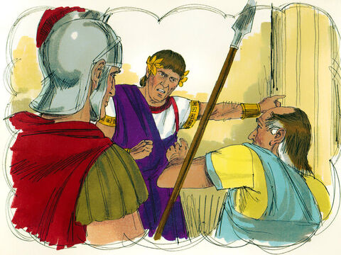
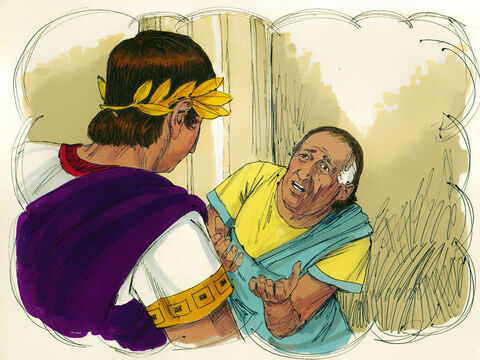
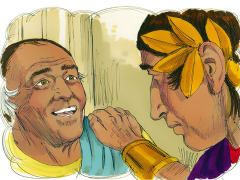
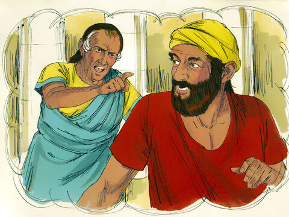
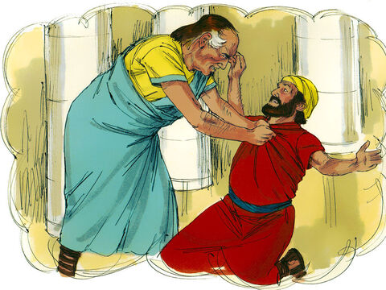
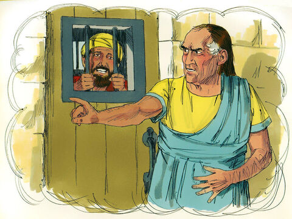
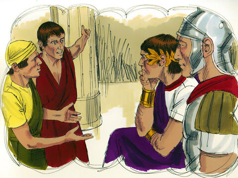
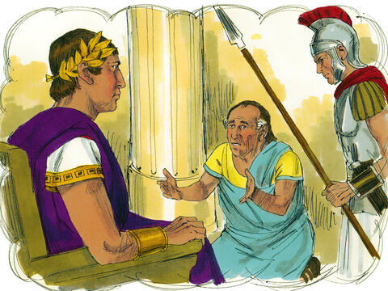
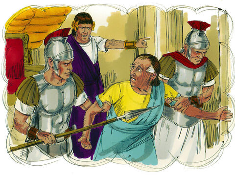

The Parable Of The Unmerciful Servant
Then came Peter to him, and said, Lord, how oft shall my brother sin against me, and I forgive him? till seven times?
Jesus saith unto him, I say not unto thee, Until seven times: but, Until seventy times seven.
Therefore is the kingdom of heaven likened unto a certain king, which would take account of his servants.
And when he had begun to reckon, one was brought unto him, which owed him ten thousand talents.
But forasmuch as he had not to pay, his lord commanded him to be sold, and his wife, and children, and all that he had, and payment to be made.
The servant therefore fell down, and worshipped him, saying, Lord, have patience with me, and I will pay thee all.
Then the lord of that servant was moved with compassion, and loosed him, and forgave him the debt.
But the same servant went out, and found one of his fellowservants, which owed him an hundred pence: and he laid hands on him, and took him by the throat, saying, Pay me that thou owest.
And his fellowservant fell down at his feet, and besought him, saying, Have patience with me, and I will pay thee all.
And he would not: but went and cast him into prison, till he should pay the debt.
So when his fellowservants saw what was done, they were very sorry, and came and told unto their lord all that was done.
Then his lord, after that he had called him, said unto him, O thou wicked servant, I forgave thee all that debt, because thou desiredst me:
Shouldest not thou also have had compassion on thy fellowservant, even as I had pity on thee?
And his lord was wroth, and delivered him to the tormentors, till he should pay all that was due unto him.
So likewise shall my heavenly Father do also unto you, if ye from your hearts forgive not every one his brother their trespasses.
Matthew 18:21-35

- 
- 
- 
- 
- 
- 
- 
- 
- 